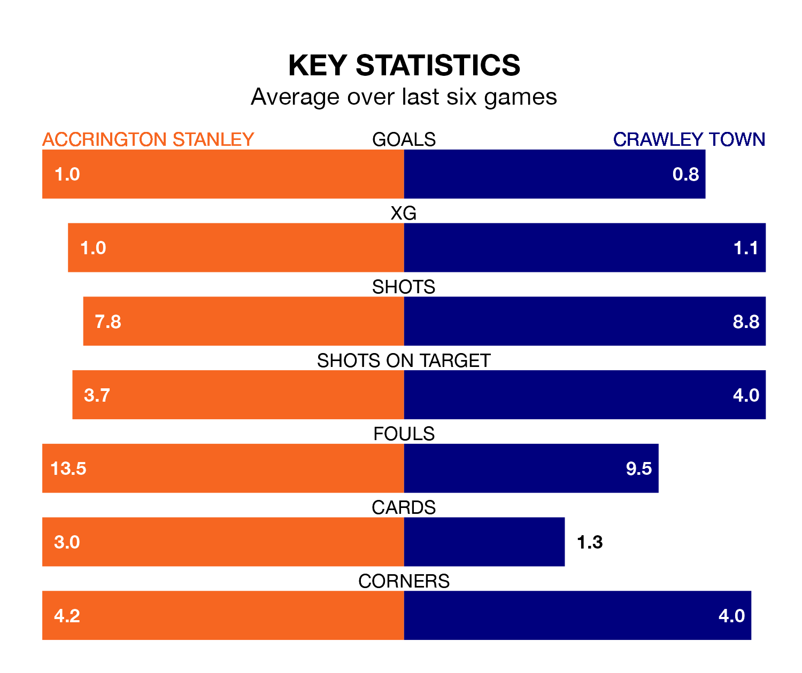

Accrington Stanley host Crawley Town on Saturday at the Wham Stadium in EFL League Two.
In their last league match, on February 17, Accrington drew with Colchester United 1-1 away, with their goal scored by Riley Harbottle (own goal).
Crawley won, 1-0 away at AFC Wimbledon on Tuesday, with Danilo Orsi-Dadamo scoring their goals.
In the last 10 years, Accrington and Crawley have played each other on eight occasions. Accrington won four of them, Crawley three, and they drew once.
On average, Accrington scored 2.0 goals and the Red Devils 1.2 in those matches.
Their last meeting was on November 11, when Crawley won 3-1 at home.
With 46 goals in 32 games so far this season, Accrington are scoring at below the league average rate with 1.4 goals per game. But they are conceding fewer than average too, letting in 41 goals at a rate of 1.3 per game.
Crawley, meanwhile, are average scorers, with 1.5 goals per game. They have also conceded 1.5 goals per game.
Stanley are in mixed form in EFL League Two, with two wins and two draws from their last six games.
With two wins and a draw over that period, Town's form is slightly worse – they have taken seven points from 18, compared to the home team's eight.
In Orsi-Dadamo, the Red Devils have one of the league's most on-form strikers so far this season. He has notched 15 goals in 31 appearances, to sit eighth in the scoring charts.
His goal rate of one every 181 minutes is quicker than that of Jack Nolan, Accrington's top scorer with a goal every 200 minutes, and a total of 11 goals in 31 games.
The visitors are 14th in the table after 32 games, of which they have won 14 and drawn four, earning 46 points.
Accrington are two places ahead of Crawley in 12th, with 13 wins and seven draws putting them on the same number of points.
Updated: 10:08 (UTC), 23/02/24